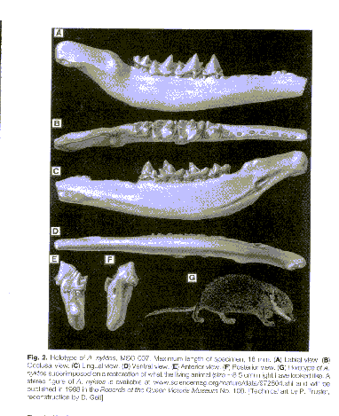

| Evolution in the News - December 1997 |
| by Do-While Jones |

This little 5-inch jaw fragment (shown from six different angles) is causing quite a stir in some circles.
Says Richard Cifelli, curator of vertebrate paleontology at the Oklahoma Museum of Natural History in Norman: "It will have the scientific world at the edge of its seat." ...
Called Ausktribosphenos nyktos, it is the oldest mammal fossil yet found in Australia. And if Rich's suspicions are correct, it is a most un-Australian mammal. Instead of being an ancestor of the continent's pouched marsupials or egg-laying monotremes, he believes it may be a placental mammal-one that nourishes its developing embryo within the mother's uterus.
That would put placental mammals down under 110 million years earlier than believed, and would upend paleontologists' ideas about mammal evolution. "All hell would break loose," says paleontologist David Archibald of San Diego State University. "Both the time and the place of origin of placentals would be off."...
[T]errestrial mammals are not thought to have entered Australia until about 5 million years ago, long after that continent had broken free of Gondwana. By then it had drifted close enough to Southeast Asia for island-hopping rodents to finally reach it.1
Some day we will tell you the fable of Pangea and Gondwana. For now, we will just say that it has to do with the evolutionists' idea of how the continents drifted into their present positions over 200 million years or so.
Things just aren't adding up for the poor evolutionists. If this "mammal" is only 5 million years old, then all the other (dinosaur) fossils in this rock layer are only 5 million years old. Furthermore, their model of the motion of continental plates is off by about 2000%. That is an unacceptable conclusion. So they need to come up with another story.
One suggestion is that placental mammals evolved the first time more than 115 million years ago, were driven to extinction by marsupials, and then were replaced by placental mammals that evolved separately in Asia and migrated to Australia 5 million years ago. If you can believe that mammals evolved once, why not twice? Some scientists reject this explanation because there is an unwritten rule that says, "You can only wave the magic wand once."
Of course, the "fools" who can't see the Emperor's New Clothes, can't see the uterus on this fossil, either. But evolutionists are much wiser than we are, and can clearly see that this fossil came from a placental mammal. Let's try to follow their logic.
This jaw fragment is so different from all other jaws that it must belong to a previously unknown "most un-Australian" species. Therefore, Thomas H. Rich, and the other members of his group who found the fossil, were allowed to give it that new long Latin name. Despite the fact that it is different enough from all other jaws that it must be a totally new species, they claim they can reconstruct the entire creature (shown above) from the number, shape, and wear of the teeth. I wonder how accurately they could have reconstructed the Duck-billed Platypus if they had only found a 5-inch piece of its jaw!
Here is our point: Evolutionists are willing to accept a 5-inch piece of jaw as evidence of a certain kind of reproductive system in an otherwise unknown creature. If Rich and his supporters carry the day, it will be taught as "fact" that placental mammals were in Australia 115 million years ago. Anyone who doesn't believe the "proof" will be called an addled-brained religious bigot.
Evolutionists aren't dismissing Rich's placental mammal because most of the things paleontologists "know" are based on equally flimsy evidence. They reconstructed Java Man from part of a skull and a leg bone. "Nebraska Man" was "known" from what turned out to be a pig's tooth. There is a thin line between "fact" and "fabrication", which evolutionists cross often.
| Quick links to | |
|---|---|
| Science Against Evolution Home Page |
Back issues of Disclosure (our newsletter) |
| Web Site of the Month |
Topical Index |
Footnote:
1 "Will Fossil From Down Under Upend Mammal Evolution?", Science, Vol. 278, 21 November 1997, page 1401, https://www.science.org/doi/10.1126/science.278.5342.1401 (Ev)